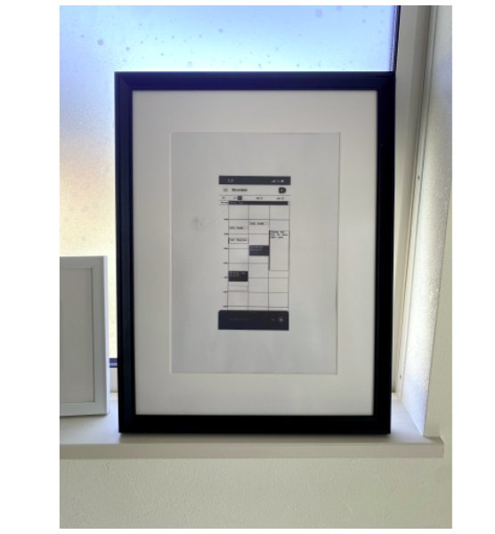

ダークトーンのグラスモーフィズムを用いたログインフォームのUIデザイン。感情状態を切り替えるトグルスイッチを中心に、ユーザーの心理状態に応じてインターフェースが変化するコンセプト。

手描きのワイヤーフレームを額装したアート作品としての展示。UIの設計プロセスを可視化し、デザインの思考過程そのものを体験として提示する試み。

Figmaを用いたインターフェース設計の制作実例。レイヤー構造とコンポーネント設計を通じて、再現性のあるデザインシステムを構築。
人が「感じる」瞬間を設計する。画面の向こうにいる人を起点に、使われるインターフェースをつくる。
ダークトーンのグラスモーフィズムを用いたログインフォームのUIデザイン。感情状態を切り替えるトグルスイッチを中心に、ユーザーの心理状態に応じてインターフェースが変化するコンセプト。

手描きのワイヤーフレームを額装したアート作品としての展示。UIの設計プロセスを可視化し、デザインの思考過程そのものを体験として提示する試み。
Figmaを用いたインターフェース設計の制作実例。レイヤー構造とコンポーネント設計を通じて、再現性のあるデザインシステムを構築。